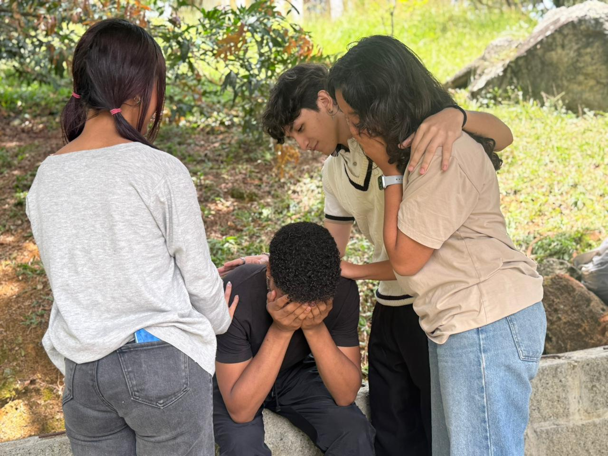

Depresión en los aprendices

¿Por qué surge?
La depresión en los aprendices del Sena puede surgir por varios factores, como la presión académica, el ajuste a un nuevo entorno, las expectativas y metas, problemas personales y la falta de apoyo. La incertidumbre sobre el futuro laboral también puede generar ansiedad y preocupación.
Factores clave
Presión académica y carga de trabajo
Ajuste a un nuevo entorno y estilo de aprendizaje
Expectativas y metas personales y externas
Problemas personales y falta de apoyo
Incertidumbre laboral y futuro profesional
Es importante que el Sena y sus aprendices trabajen juntos para crear un entorno de apoyo que promueva la salud mental y el bienestar.
Tipos de ayudas personales para aprendices del Sena
Apoyo psicológico
Asesoramiento y terapia para manejar el estrés, la ansiedad y otros desafíos emocionales.
Orientación vocacional
Ayuda para identificar intereses y habilidades profesionales.
Consejería personal
Asesoramiento para abordar problemas personales y tomar decisiones informadas.
Grupos de apoyo
Espacios para compartir experiencias y recibir apoyo de pares.
Redes de apoyo
Acceso a redes de contactos y mentores que ofrecen orientación y apoyo.